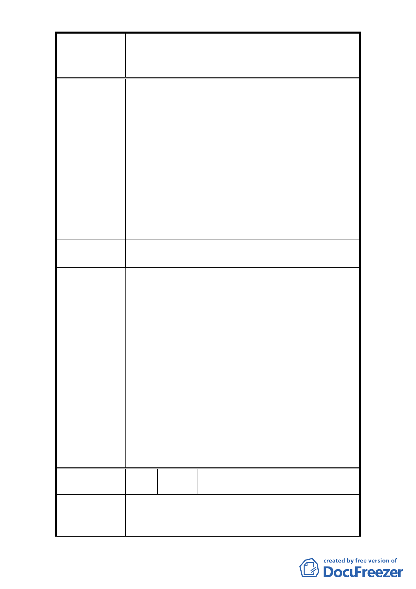

修訂臺北市大安區青田街保存區聚落風貌保存專用區細部計
案
名
畫、變更部分第三種住宅區、第三種商業區(特)為第三種住宅區
(特)(日式宿舍)及第三種商業區(特)(日式宿舍)暨劃定週邊地
區都市設計管制細部計畫案
1. 目前所被劃定的日式建築與歷史建築所呈現的建築
型態不一，如有的是空地、有的是改建後的新水泥
洋房、也有仿日式建築及如廢墟般的日式木造建築。
2. 而其中部分建築管理與保存更有待加強。常於夜半
時分，野貓打群架，老鼠日與夜吱吱叫，建築物成
陳 情 理 由 了野貓與老鼠的快樂天堂！衛生環境堪慮！如今又
聽說偶有流浪漢夜宿其中。
3. 新修計畫中：前、側院落於每 27 平方公尺應種植 1
株喬木，是否也可請幾乎無植栽的蒙藏文物中心（青
田街 8 巷 3 號）參與加入種植計畫，好與美麗及綠
樹成蔭的龍安里相襯。
1. 是否應有一定的劃定標準，及邀請里民一起參與。
建 議 辦 法 2. 應有管理及有配套措施。
1. 龍安里青田社區發展協會向本府申請指定該區 35 處
日式宿舍為古蹟，以整體保存本區日式宿舍群落風
貌。本府文化局業於 93 年起依文資法及相關法令邀
請文資委員進行本區域之文資價值鑑定，並於 95、
96 年公告 4 處古蹟、7 處歷史建築。上述文化資產，
依文資法第 18 條規定，應由所有人、使用人或管理
市 府 回 覆 意 見 人管理維護。本府文化局亦將盡主管機關督導之責。
2. 為維護本地區整體風貌，本區內非屬文化資產核心
地區仍須受都市設計以及容積管控機制，使得本地
區建築受限，並造成部分居民權益受損，故本次修
訂計畫針對本地區之都市設計以及容積管控進行修
改，期能兼顧文化資產保存與居民之土地開發利益。
委 員 會 決 議 依市府回覆意見辦理。
編
號
18
陳情人
大安青田管理委員會主任委員
梁有忠
建議地點：大安區金華段二小段 317 地號等 27 筆土地
陳 情 理 由 及鄰地。
1. 依大法官解釋第 156 號可知本都市計畫修正案係公
- 19 -